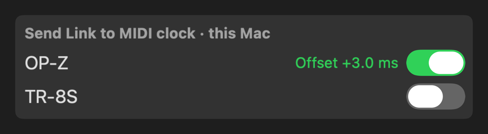

Sync external gear to Ableton Link
Hardware without Ableton Link follows MIDI clock. LinkEffekt turns your Link session into MIDI clock for every drum machine, groovebox or synth plugged into your iPad, iPhone or Mac. Each piece of gear has its own offset to line it up with Ableton Live, AUM or any other app with Link.

Link to MIDI clock in LinkEffekt on the Mac. Every piece of gear has its own switch and its own offset.
What is MIDI clock?
MIDI clock is the tempo signal of the MIDI standard. The device that leads sends a timing message 24 times per quarter note. Every device that follows counts these messages and keeps its tempo by them. Start, Stop and Continue messages run the transport. The MIDI Association lists them in its summary of MIDI 1.0 messages.
The clock travels over any MIDI connection, a 5-pin cable or USB. One device leads and all others follow. It carries tempo and no sound, and each piece of gear reacts with its own small delay. That is why a MIDI clock usually needs an offset before a sequencer sits tight.
Ableton Link and MIDI clock
Ableton Link does the same job for apps, over the network. It keeps beat, tempo and phase in time and nobody has to lead. Anyone in the session can change the tempo and the others follow, as Ableton’s Link FAQ explains.
Ableton Live, AUM, Logic Pro for iPad and many other apps have Link built in. Most hardware does not. It follows MIDI clock. A setup with apps and external gear therefore needs a bridge that reads the Link session and sends MIDI clock to the hardware. In LinkEffekt that bridge is called Link to MIDI clock.
What you need
- Gear with a MIDI input over USB or a MIDI interface, set to follow external clock.
- An iPad or iPhone with iOS 15 or later and a host that loads MIDI effects, for example AUM. Or a Mac with Apple Silicon and macOS 14 or later.
- An app with Ableton Link that sets the tempo, for example Ableton Live or AUM.
- LinkEffekt from the App Store. Link to MIDI clock for one piece of gear is free.
Send MIDI clock from Ableton Link to your gear
On iPad and iPhone
- Plug the gear into the iPad and set it to follow external MIDI clock.
- Load LinkEffekt MIDI as a MIDI effect in your host, for example in AUM.
- The box Send Link to MIDI clock lists the gear as soon as it is plugged in, with the clock on.
- For start and stop turn on Start Stop Sync in LinkEffekt’s Link settings behind the gear icon and in the app where you press play. The gear then starts on the next bar.
On the Mac
- Open LinkEffekt. It lives in the menu bar.
- Plug the gear into the Mac. The window shows one switch for each piece of gear with the offset next to it.
- Turn on Ableton Link in Live or in the app that sets the tempo.
The clock follows Link’s tempo all the time, also while the transport is stopped. It goes only to gear on the device where you turn it on. For gear on the Mac you turn it on in the Mac window, for gear on the iPad in LinkEffekt MIDI.
Set the offset for each piece of gear
Offset moves the clock up to 100 ms earlier or later to make up for the gear’s own delay. Tap Offset next to the switch and set it by ear against your metronome. The slider gives the rough value, plus and minus move in steps of 0.1 ms, or you type the number.
Set the offset where you listen, with the gear and the metronome in the same app. Each device keeps its own offset for a piece of gear. Plug it into another device and that device’s value applies.
You set it once. In one of my tests an OP-Z on the iPad needed −21 ms to sit in sync with Live.
Record external gear in Ableton Live
Where the gear is plugged in decides how its audio reaches Live.
- Gear on the iPad. One USB cable carries the clock to the gear and, if the gear sends audio over USB, its sound into the iPad. Bring that audio into your iPad host as an input and put LinkEffekt Send on the track. It shows up as its own input in Live. The steps are in Use your iPad with Ableton Live.
- Gear on the Mac. The clock comes from LinkEffekt in the menu bar and the audio goes through your audio interface as usual.
For gear on the iPad set the offset in Live against Live’s metronome, with the gear’s track on Monitor In. Then it lines up with every other track that comes from the iPad. Do not compare the gear on one device with the metronome on another. Live delays its own playback on purpose when Sync to Incoming Audio is on.
One clock only
Gear that gets two clocks runs twice as fast. While a piece of gear gets Link to MIDI clock, LinkEffekt holds back the MIDI clock an app sends to it through LinkEffekt’s port. Clock that an app sends to the gear directly is not held back, for example Live’s Sync on the gear’s own port. Turn off one of the two.
Gear that sends its own clock shows Sends its own clock and gets none, so it is not clocked twice.
Try it with one piece of gear.
Link to MIDI clock for one piece of gear is free on iPhone, iPad and Mac.
Questions about MIDI clock and Ableton Link
What is the difference between Ableton Link and MIDI clock?
Ableton Link keeps beat, tempo and phase of apps in time over a network, and nobody has to lead. MIDI clock runs over a MIDI connection from one device that leads to the devices that follow, with 24 timing messages per quarter note.
Can Ableton Live send MIDI clock itself?
Yes. In Live you turn on Sync for a MIDI output port and set its MIDI Clock Sync Delay. Link to MIDI clock in LinkEffekt is for gear on an iPad or iPhone, for sessions where another app sets the tempo, and for one offset for each piece of gear on every device.
Does my gear start together with Live?
Yes, with Start Stop Sync turned on in LinkEffekt’s Link settings and in the app where you press play. The gear starts on the next bar.
Does Wi-Fi shake the clock?
The clock is made on the device the gear is plugged into. Only the Link session itself runs over the network.
Is Link to MIDI clock free?
For one piece of gear it is free on every device with no time limit. LinkEffekt Unlimited is a one-time purchase and sends the clock to all your gear.
Live’s own MIDI sync is described in the chapter Synchronizing with Link, Tempo Follower, and MIDI of the Live manual. Every control of Link to MIDI clock is in the LinkEffekt manual under Link to MIDI clock.